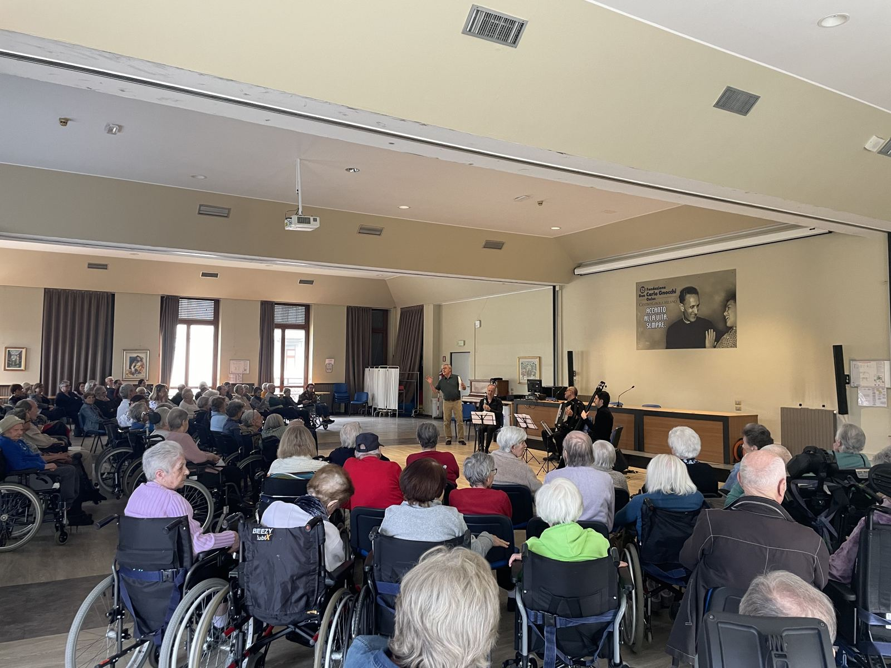

il SETTICLAVIO aps › Progetti › A Tempo
Volontariato creativo
A Tempo
Concerti, conferenze, lezioni e attività creative di musicisti e artisti volontari per gli ospiti delle RSA e degli IRCCS della Fondazione Don Carlo Gnocchi, nell'area nord di Milano.


- Per chi
- Ospiti delle RSA e degli IRCCS della Fondazione Don Gnocchi
- Dove
- Centro Girola, Istituto Palazzolo, Centro Santa Maria Nascente, Centro Vismara – Milano
- Con
- Fondazione Don Carlo Gnocchi
- Chi partecipa
- Musicisti e artisti volontari, professionisti e amatori
Il progetto
A Tempo è un progetto di volontariato creativo ideato dal SETTICLAVIO aps e realizzato con la Fondazione Don Carlo Gnocchi. Musicisti e artisti di ogni campo, professionisti e amatori, mettono a disposizione talento e tempo per accompagnare e coinvolgere le persone più fragili: ogni incontro apre spazi di ascolto e relazione, stimolando memoria, emozioni e senso di comunità.
Le attività
- Concerti del sabato al Museo del Centro Santa Maria Nascente, aperti agli ospiti della struttura e ai cittadini, con musicisti professionisti e non professionisti.
- Concerti nei centri della Fondazione, accanto ad altre iniziative come la collaborazione con l'Orchestra Fondazione I Pomeriggi Musicali.
- «Forse non tutti sanno che…»: letture ad alta voce, curiosità, leggende e racconti a cura della volontaria Maddalena Allievi, ogni settimana al Centro Diurno dell'Istituto Palazzolo.
- Conferenze, lezioni e attività ludico-creative, compresi laboratori di pittura e di espressione artistica con i volontari.
Diventa volontario
Suoni uno strumento, canti, reciti, dipingi o hai una passione da condividere? A Tempo cerca sempre nuovi volontari: chiamaci allo 02 8719 9122 o al 378 310 9393, oppure scrivici.
Le foto


I video
Domande frequenti
Chi può partecipare come volontario?
Musicisti e artisti di ogni campo, professionisti e amatori, ma anche chi vuole leggere, raccontare o proporre un'attività creativa agli ospiti.
I concerti sono aperti al pubblico?
I concerti del sabato al Museo del Centro Santa Maria Nascente sono aperti sia agli ospiti della struttura sia ai cittadini.
Come posso contattarvi?
Al numero 02 8719 9122, al cellulare 378 310 9393 o scrivendo all'associazione dalla pagina dei contatti.
Vuoi partecipare come volontario o proporre un'attività?
Gli altri progetti: Tra le Onde · Music for Life · Insieme in Musica